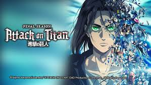

Anime Fans Club
x Home Anime -Doraemon -Sword Art Online -Fullmetal Alchemist Father -Attack On Iitan -Hunter X Hunter Shopping History Contact

Ultraman Anime Season 2 Streams Opening Animation Sequence
The anime will debut on Netflix worldwide on April 14. The new season's first episode will get an advanced screening at the "Ultraman World Premiere and Orchestra Concert" event on April 10.
Maaya Sakamoto plays Izumi, a journalist and Kotaro Higashi's love interest. Additionally, Junichi Suwabe voices Alien Pedanto in the anime. Ayane Sakura voices the character Maya, a Wadoran alien.
Several years have passed since the events of Ultraman, with the legendary "Giant of Light" (光の巨人 Hikari no Kyojin) now a memory, as it is believed he returned home after fighting the many giant aliens that invaded the Earth. Shin Hayata's son Shinjiro seems to possess a strange ability, and it is this ability, along with his father's revelation that he was Ultraman, that leads Shinjiro to battle the new aliens invading the Earth as the new Ultraman.
The first anime season premiered globally on Netflix in April 2019 and has 13 episodes. The series then premiered on television in Japan in April 2020. Kenji Kamiyama (Ghost in the Shell: Stand Alone Complex, Eden of the East, Napping Princess) and Shinji Aramaki (Appleseed, Harlock: Space Pirate, Starship Troopers: Traitor of Mars) directed the first anime season. Production I.G (Ghost in the Shell: Stand Alone Complex, Eden of the East, Napping Princess) and Sola Digital Arts (Appleseed Alpha, Starship Troopers: Invasion, Starship Troopers: Traitor of Mars) produced the anime in 3D CG. Nobuko Toda and Kazuma Jinnouchi composed the music.
Mika Ninagawa (live-action Sakuran, Helter Skelter) is directing the film, with a script by Erika Yoshida. Keiichirō Shibuya is composing the musical soundtrack. The band SEKAI NO OWARI performs the theme song "Habit."
CLAMP serialized the original xxxHOLiC manga in Kodansha's Weekly Young Magazine and Bessatsu Shōnen Magazine from 2003 to 2011, although it was renamed xxxHOLiC: Rō in 2009. xxxHOLiC: Rei is the latest manga, which launched in 2013 (but is currently on hiatus). The franchise spawned an anime film, two television anime seasons, and several original video anime projects.


New Urusei Yatsura Anime Casts Maaya Uchida, Mamoru Miyano
City Hunter Series Gets New Anime Film